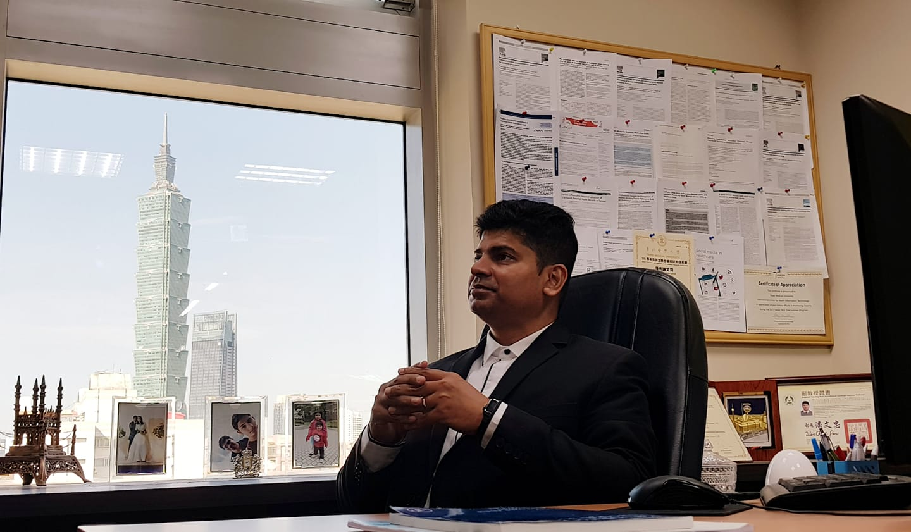

AboutAbout

About Me
- Name : Syed Abdul Shabbir
- Email : drshabbir@tmu.edu.tw
- Phone : (+91) - 98765432100
- Current position : Professor, Graduate Institute of Biomedical Informatics,
Taipei Medical University, Taipei, Taiwan.
Artificial Intelligence and Digital Health Consultant,
Principal Investigator at International Center for Health Information Technology - Organization : College of Medical Science and Technology, Taipei Medical University. Taiwan.
- Nationality : Indian